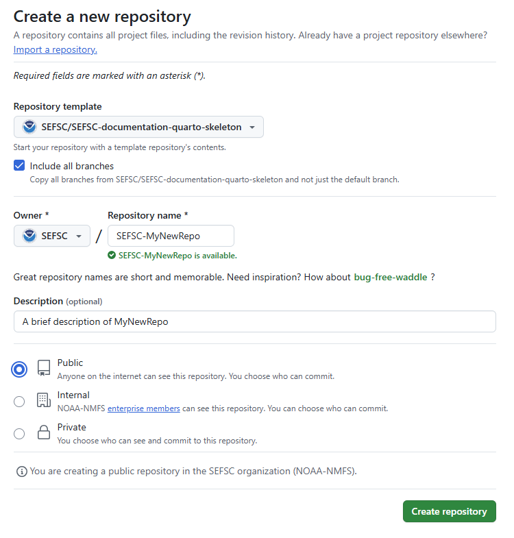
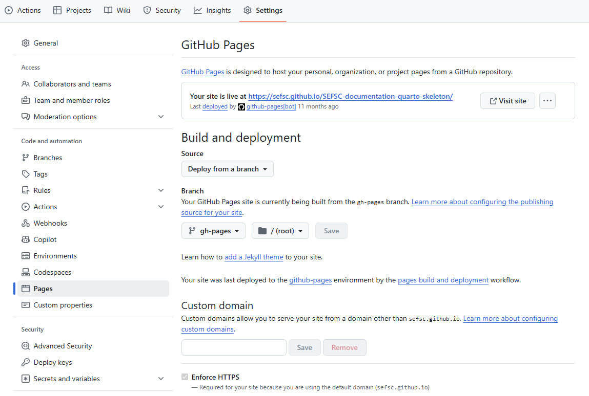

Getting Started
Creating your own documentation page using the SEFSC Quarto Theme
Follow Step 1a below if you do not yet have a GitHub repository and would like to start a new one with gh-pages. If you already have a repository to which you would like to add a new gh-pages branch with the SEFSC documentation template, start with Step 1b.
Step 1a: Use the SEFSC-documentation-quarto-skeleton template to create your own forked repository
This is done on the GitHub website. These steps assume you already have a GitHub account in place.
Browse to the SEFSC-documentation-quarto-skeleton repository, select the “Use this template” button, and select “Create a new repository”:

Select the repository owner (your own account or a GitHub organization you have write permissions to) and type a name for the repository. If the new repository is for SEFSC-related work, the repository name should adhere to the SEFSC repository naming convention as depicted in the SEFSC GitHub SOP. Select the “Include all branches” box. This is important to ensure everything works without any additional manual configuration. Enter a description, if desired. (This can be changed or added later.) Select “Public” (GitHub Pages doesn’t work on private repos unless you have a paid account). At the end of this step, you should have a new repository available at the following URL: https://github.com/owner/my-new-documentation-repo.

In the newly created template repo, click “Settings” at the top of the page, then select “Pages” on the side menu. Enable GitHub Pages, if not already enabled, and note the URL at which the site is live. You can verify that everything worked by navigating to the site in a web browser. It should exactly like the original web book. Keep other settings unchanged and save any changes.

From your new repository page, download or “clone” the repository to edit it locally using code editing software such as Visual Studio Code. The local editing process assumes you have a git client installed in order to push your edited files back to GitHub. For those who do not have git, editing can be accomplished on the GitHub website one file at a time (see Step 2: Edit your documentation site content below for details).

Step 1b: Add a new orphan branch to an existing repository
An orphan branch in GitHub is a branch whose commit history is independent of all other branches in the repo. This is useful for GitHub Pages because we can keep the website files separate from any project code and can work on either the website or the project code independently from each other. GitHub Pages are customarily saved in branches named “gh-pages”, and this repo uses a docs branch for the website files. We need need to create both of these in the existing rep. Start with the gh-pages branch, and then repeat for docs.
Navigate to your local copy of the repository
Create a new orphan branch and remove the git commit history that is automatically generated.
git checkout --orphan gh-pages git rm -rf . rm .gitignoreNoteThere may or may not be a
.gitignorefile to delete. If not, do not worry.We need to temporarily set the remote origin to the SEFSC documentation repo. First, note the existing remote origin URL so that we can restore it later. It can be retrieved with the command:
git remote -vThen change the remote URL to the documentation repo:
git remote set-url origin https://github.com/MattGrossi-NOAA/SEFSC-documentation-quarto-skeleton.gitNoteTo find this new URL, navigate to the SEFSC-documentation-quarto-skeleton repo in a web browser and click on the green “< > Code” button.
Make sure you’re on your local
gh-pagesbranch and then pull the contents of thegh-pagesbranch of SEFSC-documentation-quarto-skeleton repogit checkout gh-pages git pull origin gh-pagesUse
ls -lato verify that you now have all of the files and directories from the skeleton repo.Change the local remote origin back to the original repo
git remote set-url origin <old-url>where
<old-url>is the URL of the original repo retrieved in Step 1b.3.Push this new branch to the remote repo
git push origin gh-pagesIn a web browser, navigate to the repo to which you just added a
gh-pagesbranch. Click the “Settings” tab, then “Pages” on left sidebar.In the “Build and deployment” section, under “Source”, select “Deploy from branch” from the dropdown menu.
NoteIf your repo belongs to you (as opposed to belonging to an organization), it must be a public repo for this be available.
Under “Branch”, select “gh-pages” from the dropdown menu. Leave the directory as “/(root)” and click “Save”.

While still within “Settings”, click “Actions” on the left sidebar, then “General”.
Under “Workflow permissions”, select “Read and write permissions” to allow GitHub Actions to modify the repository, then click “Save”.

At the top of this page, you should see a banner saying “Your site is now live at…” with the URL of your documentation page. Launch the page to be sure. It should look exactly like the SEFSC-documentation-quarto-skeleton page but with a URL pointing to your project.
Repeat steps 1-6, replacing “gh-pages” with “docs” to create a
docsbranch for the website files.
You should now have at least three local branches: the gh-pages and docs branches you just created, and whatever branch(es) you had originally (e.g.,main, master, etc.). Verify using git branch --all. Likewise, your remote repository should now have new gh-pages and docs branches as well as the original branches, and they should contain a copy of the SEFSC documentation template files and subdirectories.
Use git checkout <branch-name> to switch between branches. Everything that follows involves this new docs branch.